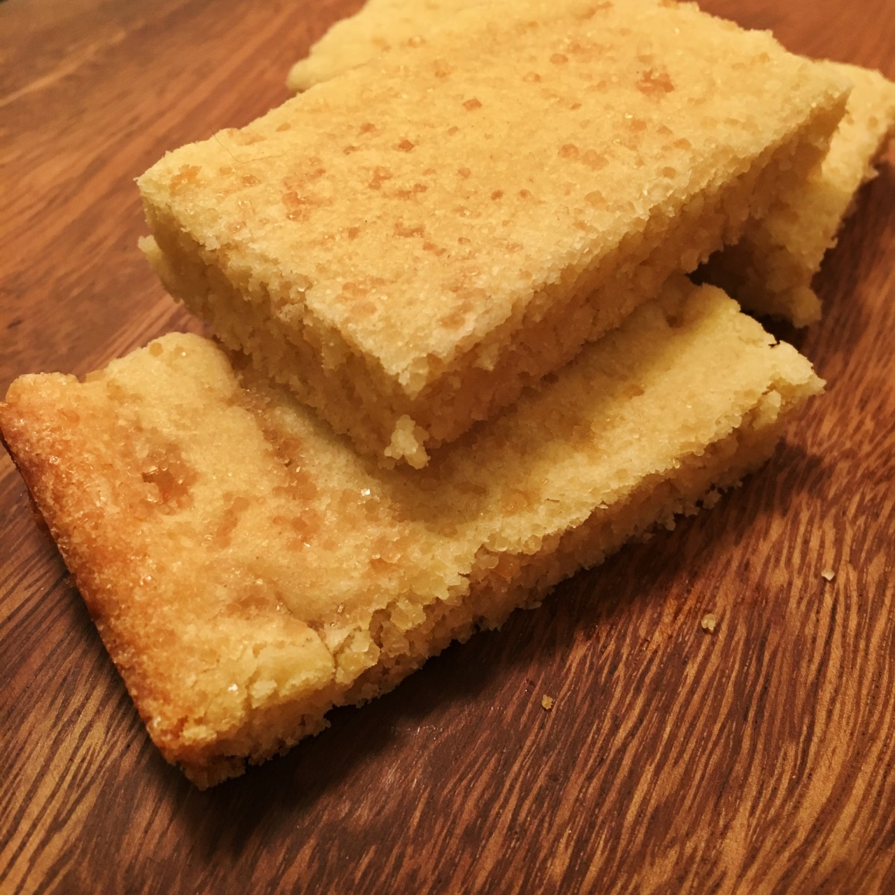

Norwegian Christmas Squares

Description
This is the perfect simple recipe to bake on Christmas day! All you need is a handful of ingredients, and in 20 minutes, this delight will be in your mouth!
Ingredients
- 1 cup of unsalted butter, softened
- 1 egg
- 1 cup of sugar
- 2 cups of flour
- 1 tsp vanilla extract
- 1/2 teaspoon of salt
- Raw sugar for dusting
Steps
- Preheat the oven to 400 degrees. Chill a 9x13″ baking pan in the freezer. Do not grease the pan.
- Using a mixer, blend the butter, egg, sugar, and salt together until it is creamy. Add the flour and vanilla and mix using your hands until the mixture holds together in large clumps. If it seems overly soft, add a little extra flour.
- Using your hands, press the dough out onto the chilled and ungreased baking sheet until it is even and ¼ inch thick. Dust the top of the cookies evenly with raw sugar.
- Bake at 400 degrees until the edges turn a golden brown, about 12-15 minutes. Remove from the oven. Let cool for about five minutes before cutting the cooked dough into squares. Remove the squares from the warm pan using a spatula.